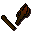

Iban disciple
| Config name | ibanmonk |
| NPC id | 1002 |
| Combat level | 13 |
| Hitpoints | 20 |
| Attack / Strength / Defence | 8 / 8 / 12 |
| Respawn | 500 ticks |
| Options | Talk-to, Attack |
| Wander range | 5 tiles from spawn |
| Max range | 7 tiles from spawn |
| Defined in | scripts/quests/quest_upass/configs/upass.npc |
Iban disciple
A dark magic user.
Show all 13 spawns on the world map → Open in knowledge graph →
Drops
Drop script: scripts/quests/quest_upass/scripts/iban_disciple.rs2 (specific handler)
Always dropped
| Item | Quantity | Rarity | Notes |
|---|---|---|---|
| 1 | Always | ||
| Robe of zamorak | 1 | Always | |
 Broken iban staff | 1 | Always | if %upass = ^upass_complete if ~obj_gettotal(ibanstaff) = 0 if ~obj_gettotal(brokenibanstaff) = 0 |
Locations
| Area | Coordinates | Level | Count | Map |
|---|---|---|---|---|
| unlabelled | 2149, 4646 | 1 | 1 | view |
| unlabelled | 2150, 4648 | 1 | 1 | view |
| unlabelled | 2153, 4646 | 1 | 1 | view |
| unlabelled | 2153, 4649 | 1 | 1 | view |
| unlabelled | 2156, 4646 | 1 | 1 | view |
| unlabelled | 2157, 4649 | 1 | 1 | view |
| unlabelled | 2159, 4635 | 1 | 1 | view |
| unlabelled | 2159, 4642 | 1 | 1 | view |
| unlabelled | 2159, 4646 | 1 | 1 | view |
| unlabelled | 2159, 4650 | 1 | 1 | view |
| unlabelled | 2160, 4662 | 1 | 1 | view |
| unlabelled | 2163, 4653 | 1 | 1 | view |
| unlabelled | 2163, 4660 | 1 | 1 | view |
Dialogue
PlayerHi.
Iban discipleHail the great one, my lord Iban. I die for you again and again.
PlayerIs that possible ?
Iban discipleUnder Iban anything is possible. Death is only the beginning.
Iban discipleIban is our father, our guide. Soon he will rule all life.
Iban discipleSom Molica Aniul Demonte.
PlayerPardon ?
Iban discipleSuccumb to the might of Iban, the ruler of this world.
Iban discipleAn impostor... Die, scum!
Quests
Referenced in scripts
scripts/quests/quest_upass/scripts/iban_disciple.rs2